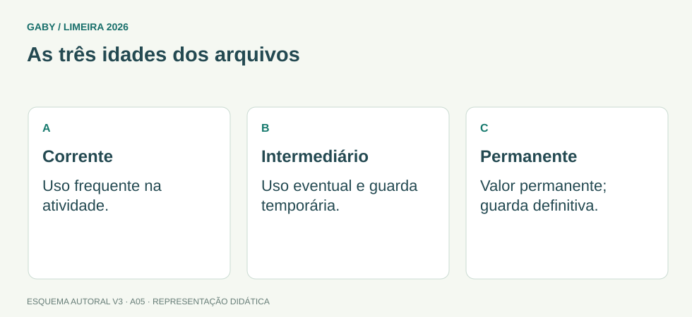

Objetivos do módulo
- Entender ciclo de vida dos documentos.
- Diferenciar arquivos corrente, intermediário e permanente.
- Compreender classificação, temporalidade e eliminação controlada.
As três idades dos arquivos

Descrição em texto do esquema
- Corrente: Uso frequente na atividade.
- Intermediário: Uso eventual e guarda temporária.
- Permanente: Valor permanente; guarda definitiva.
Oficina visual · aplique o esquema
Uma sala está cheia de documentos antigos. A idade dos papéis, sozinha, autoriza o descarte?
Atividade autoral complementar da V3. Registre sua resposta; a resolução está no arquivo de gabarito e revisão.
Mapa do conteúdo
1. Documento e arquivo
Documento registra informação produzida ou recebida no exercício de atividades. Arquivo, em sentido arquivístico, é o conjunto de documentos acumulados organicamente por pessoa ou instituição em função de suas atividades, além de poder designar local/serviço conforme contexto.
2. Ciclo documental
| Fase | Uso típico | Destino |
|---|---|---|
| Corrente | uso frequente, próximo ao setor produtor | permanece ativo ou transfere |
| Intermediário | uso menos frequente, aguardando prazo | eliminação ou recolhimento |
| Permanente | valor histórico/probatório duradouro | guarda definitiva |
3. Classificação e ordenação
Classificação organiza documentos por funções, assuntos ou plano adotado. Ordenação coloca unidades em sequência dentro da classe: alfabética, numérica, cronológica etc. Classificar e ordenar são operações relacionadas, mas não idênticas.
4. Temporalidade
Tabela de temporalidade define prazos de guarda e destinação com base em valores administrativos, legais, fiscais e históricos. Não se elimina documento apenas porque “parece antigo”.
5. Eliminação e descarte
Eliminação deve obedecer normas, autorizações e procedimentos, preservando sigilo e prova da operação quando exigido. O edital menciona descarte e incineração conforme normas de temporalidade: a ênfase é que destruição é controlada, não arbitrária.
6. Conservação e documentos digitais
Conservação inclui condições ambientais, manuseio e proteção contra riscos. Em documentos digitais, integridade, autenticidade, acesso, cópias de segurança e formatos sustentáveis também importam.
Exemplos resolvidos passo a passo
Exemplo 1
Situação: Documento usado diariamente pelo setor. Em qual fase?
Exemplo 2
Situação: Documento sem uso frequente, aguardando prazo para destinação.
Exemplo 3
Situação: Servidor quer destruir caixas antigas sem consultar tabela.
Pegadinhas e erros frequentes
- Achar que arquivo permanente é “documento velho”.
- Confundir classificação com ordenação.
- Eliminar por falta de espaço sem temporalidade.
- Desconsiderar gestão de documentos digitais.
Resumo de prova
- Corrente = uso frequente.
- Intermediário = aguarda destinação.
- Permanente = guarda definitiva por valor.
- Classificação ≠ ordenação.
- Temporalidade define prazo e destino.
- Eliminação precisa ser autorizada e segura.
Exercícios do módulo
Resolva sem consultar o arquivo de gabarito. As questões são autorais e construídas para treinar os conceitos do edital.
- intermediário
- permanente
- morto sem valor
- corrente
- permanente necessariamente
- pessoal
- intermediário
- corrente
- tudo que perdeu uso
- de guarda definitiva por valor duradouro
- qualquer documento antigo
- todo e-mail
- prazos e destinação
- senhas
- salários
- organograma
- cor da pasta apenas
- tamanho do papel apenas
- ordem aleatória
- plano/critérios funcionais ou temáticos adotados
- somente permanente
- sempre aleatória
- alfabética, numérica ou cronológica
- somente jurídica
- regra geral
- inadequado
- sempre obrigatório
- eficiente por definição
- integridade e acesso
- somente grampear
- incinerar cópia
- ignorar backup
- por decisão informal
- sempre ao fim do ano
- para todo documento digital
- conforme normas de temporalidade e procedimentos
- incompatíveis
- irrelevantes
- operações diferentes e complementares
- sinônimos perfeitos
Quando terminar, abra Assistente Administrativo 05 - Arquivística e Gestão Documental - Gabarito e Revisão.
Checklist de domínio
- ☐ Entender ciclo de vida dos documentos.
- ☐ Diferenciar arquivos corrente, intermediário e permanente.
- ☐ Compreender classificação, temporalidade e eliminação controlada.
Meta do módulo: 80% ou mais nas questões, sem depender de consulta.
Referências e conteúdos auxiliares
- Conarq — Criação e desenvolvimento de arquivos públicos municipaisConsulte especialmente gestão de documentos, protocolo, classificação, avaliação e destinação.
- Brasil — Lei 8.159/1991, política nacional de arquivosFundamentos de gestão documental e guarda de documentos públicos.
Referências externas de apoio consultadas para a V3 em 27/09/2026. A origem das questões é o material autoral do projeto; estes links não indicam que uma instituição publicou ou validou os exercícios. As páginas externas precisam de internet. Em informática, confira a versão do programa; em legislação, observe o recorte e as regras de atualização do edital.